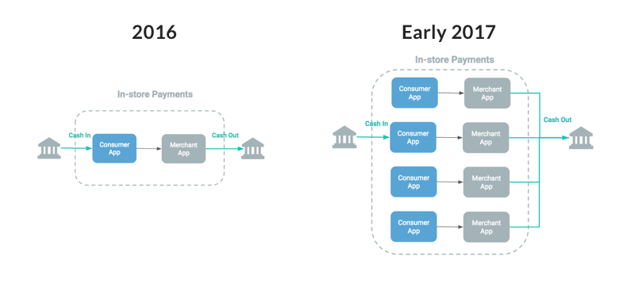
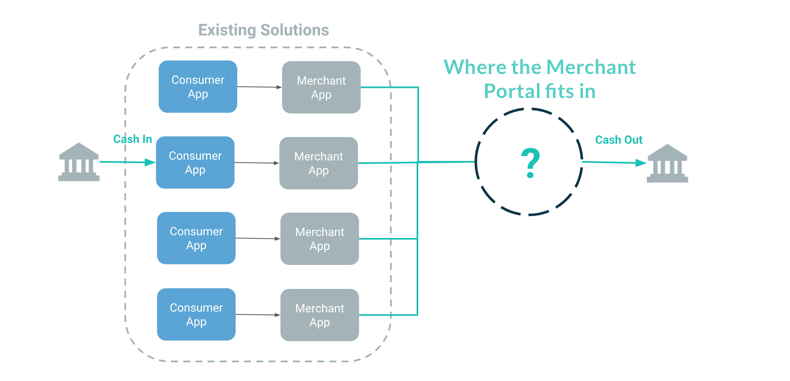
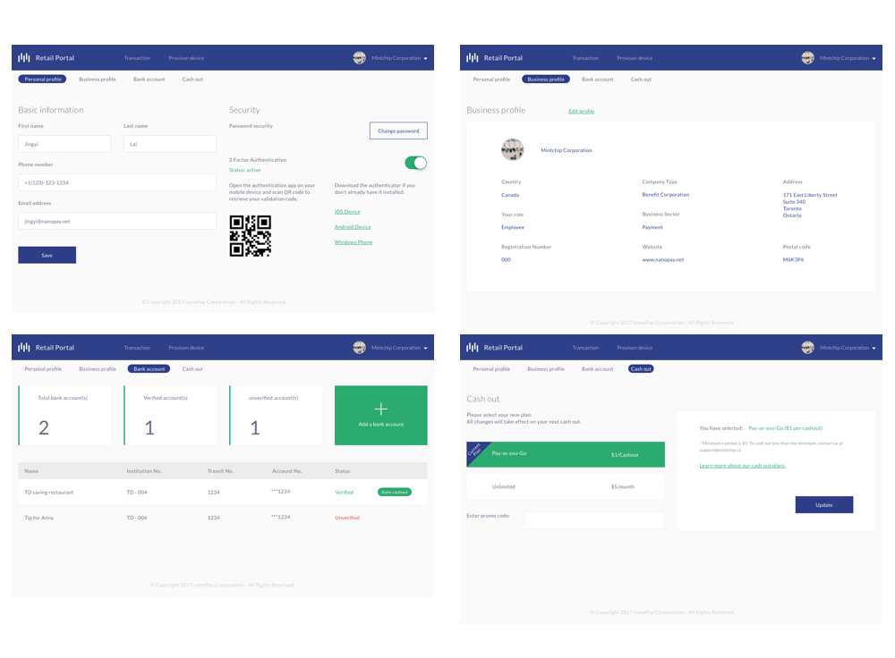
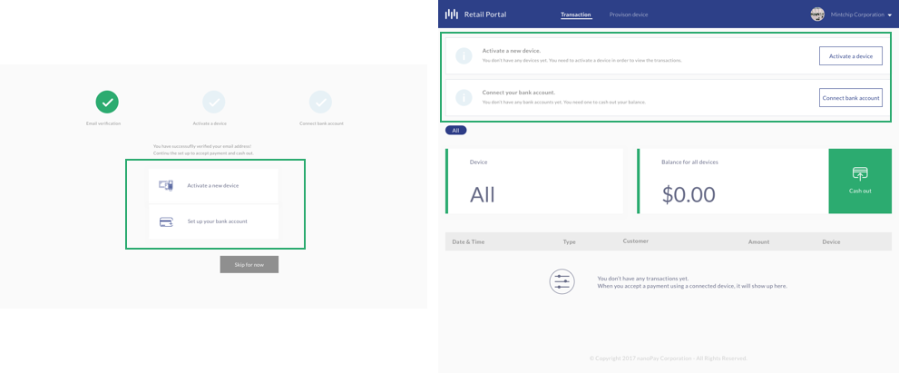
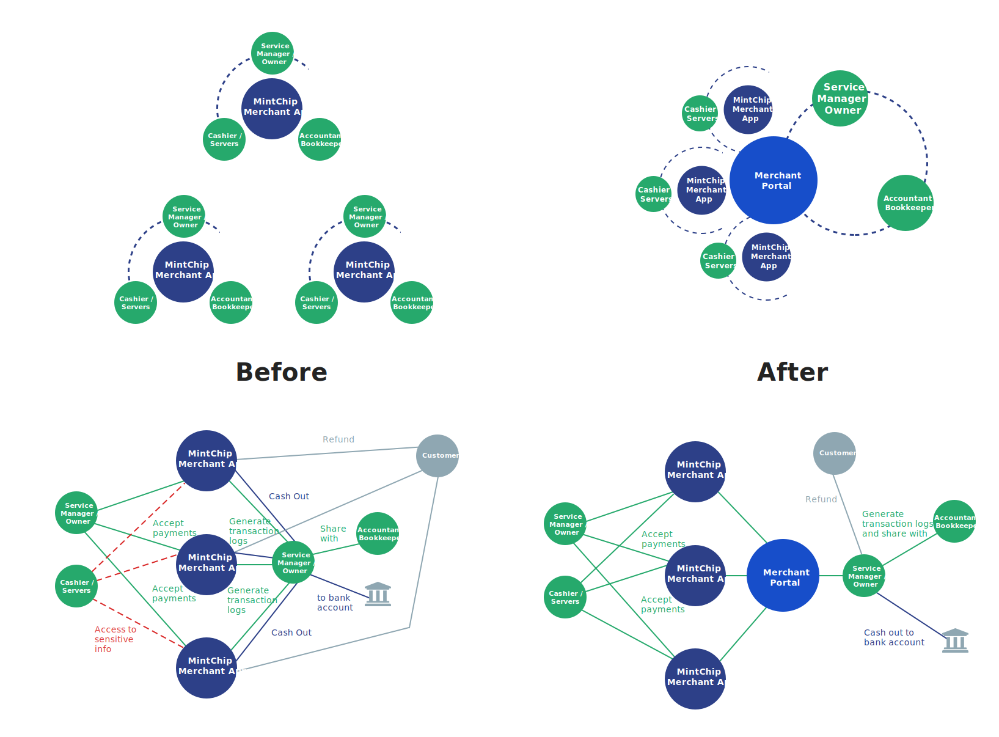

MintChip Retail Portal: A Management System for Merchants
Product Design 7 min read
1-1
The MintChip Retail Portal is an online application for merchants accepting MintChip payments to better manage transactions, provision multiple devices and easily cash out.
As the sole designer, I worked closely with the customer success manager in the research and testing phase, collaborated with PM and developers in the design part. I was responsible for creating research deliverables, the interaction & visual design of the product and marketing assets.
Background
MintChip is a digital currency that provides the underlying system to facilitate the exchange of value between two parties in real-time without intermediaries. Forbe has a video explaining how MintChip works.
The nanopay retail solution consists of two parts: P2P payments between consumer apps and In-store payments between consumer and merchant apps.

1-1-1 / nanopay retail structure in 2016
When the merchant only has one device, it seems everything works fine. However, when more than one devices are adopted, problems start to arise. There is no connection between different devices, which causes repetitive work like cashing out, connecting bank account and manage transactions.

1-1-2 / nanopay retail structure in 2017. Merchant devices including merchant apps on iPad, iPhone and Ingenico terminal
A Deeper Dive into the Problem Space
To better understand the problem, I worked closely with the customer success manager to find out what the merchants really need. The first step was simply going for a visit and opening up the topic with some small talks. We talked with 8 merchants with 14 merchants onboard in Liberty Village and got some great insights. The following is some highlight words from our note:
"We have two iPads, that means need to connect bank account twice, and cash out twice to get our money"
"I like the way MintChip works fast and easy, but there are too much sensitive information in the merchant app and it is dangerous just in the app itself"
"I don't want the server to touch the cash out setting so basically I'm taking care of all the MintChip payments"
"At one time a customer mistakenly tipped us 100 dollars and we had to give him cash back because there is no refund option"
"There are 3 devices in our place, two iPads, one terminal, and each time if there is something, we'll need to look through all three of them"
We noticed merchants were frustrated about the repeated actions across multiple devices and the unrestricted access to the sensitive information in the merchant app.
1-2 / We created the persona after talking with merchants and organizing the notes.
Project Goals
The design needs to reflect both user needs and the business goals. I also incorporated the requirements and the vision from the business side.
Follow the MintChip branding to convey a consistent, friendly but impactful visual experience
Design a smooth and painless flow to manage transactions and cash out across multiple devices
Securely protect merchant's sensitive information
Solution 1: All the Transactions in ONE Place
It used to be a pain for merchants to cash out because the MintChip balance is stored separately in different individual devices. In order to cash out, a merchant will need to cash out multiple times on multiple devices. Especially if the cash-out frequency is daily, it can be a big pain.
1-3 / The old flow only has two steps, but with multiple devices, it became a problem.
But with the merchant portal, they can easily cash out all the balance or balance from the individual device, at one click. Plus, with all the transactions at one time, it becomes easier to monitor and manage the transactions.
The before and after user journey maps below shows how the retail portal can help merchant cash out and manage transactions painlessly.
1-3-1 / With all devices connected in the merchant portal, merchants can cash out all the balance easily.1-4,1-5 / From the user journey map before and after, we can see the portal reduced the repeat actions the users do when cashing out with different devices.
As cash out is such an important process, we started with asking the following questions:
How often do merchants cash out?
Do they normally cash out to the same account?
How much will they cash out?
If they have more than one device, will that affect their behaviour?
It takes 2 business days for the balance to show up in the bank account, how this affects the merchants?
With some early explorations, I turned to the customer success manager for help.
1-5-1 / We explored full and partial cash-outs, as well as cashing out with multiple steps and one step.
We found out that Most merchants have one bank account dedicated to their business, but some have more than one. And though MintChip is much cheaper than credit cards payment, merchants are not feeling very safe because it is pretty new. This makes them cash out all the money as soon as they receive it from the merchant app, especially with the two business days delay.
1-5-2 / Iterations on cash out flow1-6 / Prototype simulating how a merchant can cash out all the MintChip balance together: choose cash-out option -change the bank account - modify cash-out amount- confirmation
Solution 2: Refund Directly from the Portal
Refunding customers used to be a big pain for merchants as there is no refund option and merchants will have to do it in cash, not to say refunding a customer remotely. In order to solve this problem, we added the refund option from the portal.
1-6-1 / Merchants can refund consumer directly from the portal1-7,1-8 /The red part shows the repeat process Keiko has to do when looking for a specific transaction, which is greatly improved by the retail portal. Also, the refund is possible in the portal so no more cash refund and sensitive information are securely protected.
The biggest challenge in designing the refund flow is to find out where the refund button should locate. I experimented with 3 options: 1. Occupy one column in the list view; 2. Hidden inside a menu button in the list; 3. Hidden inside the list.
1-9 / 3 explorations of the refund option
We decided to take the third option as refund is not a frequent action and should be carefully considered. Also, we don't have other capabilities for transactions and the development cost of option 2 is higher, so we settled on option 3. But we think as we have more capabilities, option 2 will be a good choice. To make the action more discoverable, we added the hover effect on the list.
The refund option solved the problem of the mess with sales report when using a different method other than original format to refund. The two transactions with different sale and refund greatly help the accountant out of the confusion.
1-10 / Prototype simulating how a merchant can refund within the MintChip ecosystem
Solution 3: Dump the Merchant App - Sensitive Info Exclusively in the Portal
One of the biggest concern for the merchants is the security of sensitive information, which includes bank accounts, MintChip balance, etc. Most of the time, the owner only wants the server to have access to accept payments and view transactions, which results in that either the owner or manager is the only one who uses the MintChip device.
1-11 / The old MintChip merchant app allows users to access sensitive information, like password and cash-out settings
We tried using user access control based on user login information, but the result was disappointing. The device is shared by all the workers at the same workplace, and switching accounts during the busy hours is a huge pain.
What is the sensitive information?
Money - Cash out setting , bank account
Refund - “I hope my server can approach me for a refund, and explain to me what happened”
Security - Logout, password
In the research, we noticed that sensitive actions like refunding, cash-outs don't happen frequently and should be securely managed by the managers. So we made a decision on moving all the sensitive actions to the portal which only managers have access to, and made the merchant app only capable of accepting payments and view transactions.
1-12 / The new MintChip merchant app only allows users to accept payments, view transactions and turn on/off the tip toggle

1-13 / Merchants will manage their settings in merchant portal with information secure managed
All the other actions like the bank account, cash out, including refund, are exclusively moved to the portal, so only the person who has access to the portal can touch those settings, making the MintChip balance securely managed.
Onboarding Merchants
Without a clear and easy onboarding process, all our solutions will just be in vain. In order to use the retail portal, merchants need to finish the following tasks:
Register a merchant account
Provision merchant apps(devices) to accept payment
Connect a bank account to cash out
We had discussions on if we allow people to play with the portal without providing the business information, but we decided not to do that, in order to better verify the identity of the merchant and protect from fraud.
1-14 / Merchants need to input the personal information and business information, then nanopay will verify their accounts.
The goal for merchants is to accept payments and cash out, so we added the two main steps to help them set up. As the two steps are so important, we decided to show them again if merchants skip.

1-15 / Set up process still available after skip to the home screen
Step 1: Provision Devices
The purpose is to create a connection between the devices and the portal, so the transaction information can be transferred between.
1-16 / Information transfers between merchant app and portal
Each device has a unique ID, which we use them to distinguish between different ones in the portal.
1-17 / We ask merchants to name their devices and choose the device type in order to help them better distinguish different ones.
Step 2: Connect Bank Account
Without a bank account, merchants can still accept payments, but they will be stored in the MintChip wallet balance. In order to cash out, they need a bank account and this is why we made it the second step.
1-18 / Merchants need a bank account connected to cash out
We currently use the micro deposit to verify bank account. Users need to submit their bank information and we will deposit an amount to their account, and if they input the right amount, the account will be verified.
1-19 / In order avoid fraud and spam, we decided to only allow 3 trials. After that, users need to contact us to have their account verified.
The Complexity of A Restaurant
In a restaurant, there are many parties participating and interacting with the MintChip products: the service manager, the owner, servers, cashier... In the reality for a small size merchant, many roles overlap together.
The graph below outlines their touchpoints and end to end journey before and after, showing how the MintChip retail portal improves the way people work. All 3 parties need to touch every separate MintChip merchant app because there is no connection in between, but with merchant portal, the servers can just do their job, the owner can easily monitor the transaction process without worrying about security, while the accountant can get all the logs at one time.

1-20 / Touchpoints and journey before and after
The Landing Page
I was also responsible for designing the landing page for the retail portal.I worked closely with the customer success manager and the marketing team to finalize the content and structure of the site. We followed this 3-step-methodology:
Define the user flow
how users go to our website, how we want to guide them to reach to us
They know us from the brochure - search online - go to the website - go through content - contact us - conversion
Information structure
what do users want to see, what should be included
Users want to know who we are, what are we doing, what problem is retail portal solving, what kind of benefits they can get - contact information
Design
what the website will look like
The visual design should follow the same brand guideline as MintChip
1-21 / The first version highly focus on the functionality of the retail portal, but didn't connect well the original merchant app, which makes the merchants confused. 1-22 / Animating prototyping with Principle on the landing page1-23 / The final version provides instruction on how to get started with the existing merchant app. The pricing is put at a much more prominent place.
Above / I'm not able to provide the accurate data due to NDA.
"It is much easier to cash out now."
"Seeking a transaction is way easier"
At the same time, we were exploring further solutions like auto-settlement. The following are some learnings:
Communication is important and helpful, it helps to understand the goals and priority of different teams.
Collaboration is such a powerful tool for ideas and creativity. I was inspired a lot by teammates in the brainstorm and design critique sessions.
Scaling challenges the design of the product, even for very mild scaling, which inspired me to have a more systematic and compatible way of making design decisions.
* Due to the change of strategy, the retail portal is closed for new merchants, while the MintChip consumer app is still available.